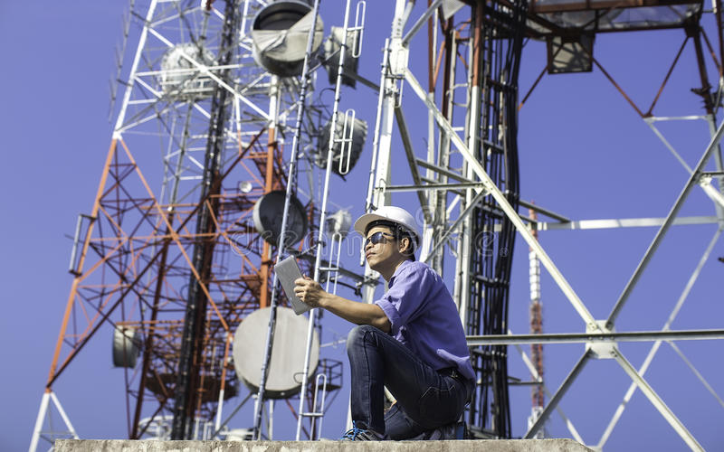
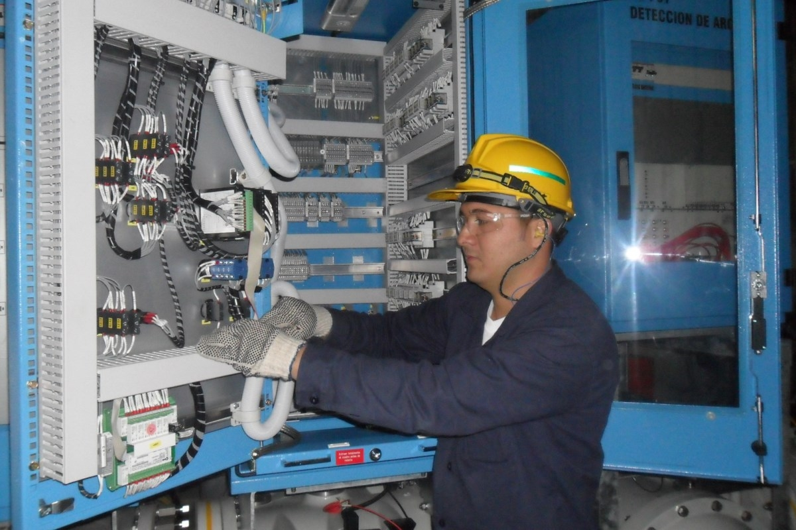

-

ESTACIÓN TERRENA, CIUDAD DE EL ALTO
La estación terrena de Amachuma es la primera estación terrena de Bolivia de control y operación satelital junto con la Estación Terrena de La Guardia la cual es dependiente de la Agencia Boliviana Espacial. Estamos presentes en aplicaciones satelitales
-

CONSULTAS PROFESIONALES EN SWAP DE REDES "LTE"
ESTUDIO Y APLICACIÓN DE LAS TELECOMUNICACIONES, empresa que brinda soluciones integrales en infraestructura de telecomunicaciones en el Bolivia, está a cargo de la implementación de 222 Estaciones Bases Celulares basados en equipos 4G / 3G / 2G a nivel nacional, realizando los siguientes trabajos: instalación de gabinete de energía TP, cableado de F.O. y energía para nuevas RRU´s, instalación e integración de BBU´s, Swap de gabinetes de equipos de energía y antenas.
-
DISEÑO Y ANALISÍS DE INFRAESTRUCTURA "BACKBONE"
Se estudia el funcionamiento de la tecnología TDMoIP en sus dos variantes: emulación del circuito y compresión de voz. Se presenta una descripción de la red de acceso TDM actual de la empresa Integral Data, obteniendo el requerimiento en capacidad de transmisión de la información para la migración de los circuitos TDM actuales hacia una red basada en el protocolo IP, y se proyecta la capacidad de transmisión a 10 años mediante el diseño de una red de backbone sobre anillos de fibra óptica para unir las redes de acceso y que además soporte compresión de voz con TDMoIP, seleccionando el tipo de fibra óptica y los equipos necesarios.
-

MONITOREO PREVENTIVO Y CORRECTIVO DE INSTALACIONES DE ALTA POTENCIA EN LAS TELECOMUNICACIONES
El objetivo principal de nuestra consultoria consiste en desarrollar la evaluación de un proyecto de instalación de una red mixta de fibra óptica y par de cobre sobre la red de distribución eléctrica, para ofrecer servicios de telecomunicaciones, presentando un estudio preliminar de viabilidad técnica, económica, comercial y regulatoria del proyecto. El trabajo se justifica dada la oportunidad de negocio existente en el mercado de la banda ancha para una empresa de distribución eléctrica, basada en la ventaja técnica y estratégica que tendría al implementar la red mixta de fibra óptica y par de cobre, aprovechando la infraestructura de su negocio principal y la posibilidad de desarrollar una oferta de servicios de mucho mayor capacidad en relación a los actuales proveedores de banda ancha en el mercado nacional.